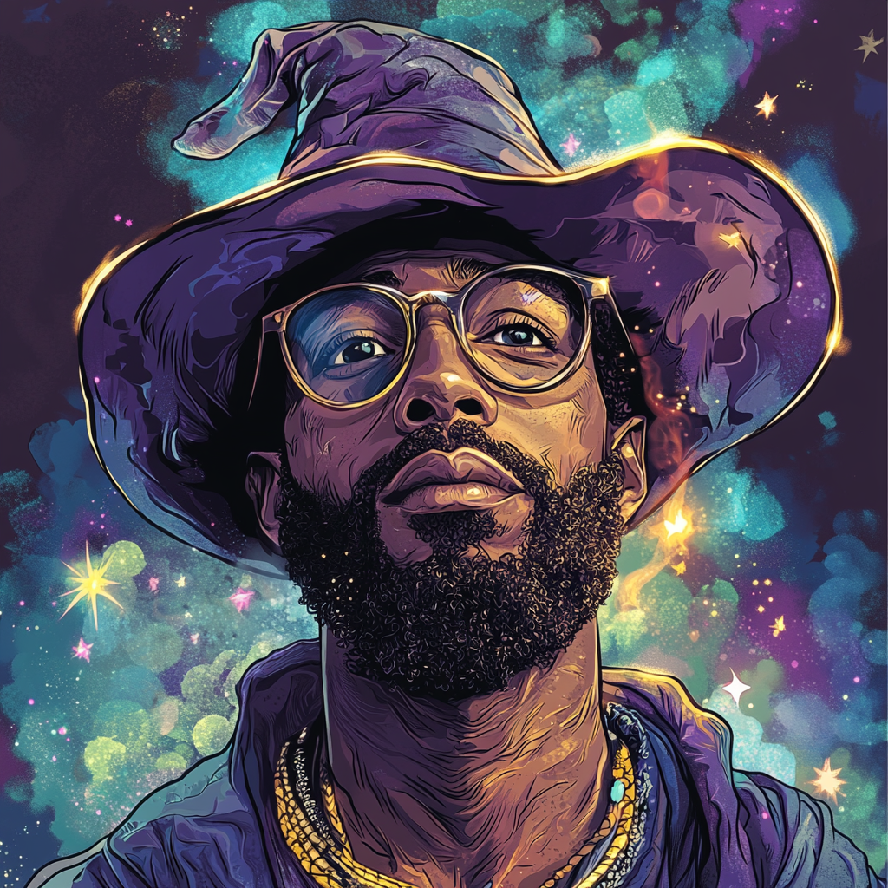

404Wizard Resume

SUMMARY
- 10 years of leadership and project management.
- 15+ years executing product & brand strategy in various industries (Blockchain, Finance, Military, Food etc.).
- 4 years designing brand & product strategies for blockchain-based companies.
- Respected leader and role model inspiring through effective mentoring, collaboration, and leading by example.
- Cross Collaboration with multiple types of stakeholders including, executives, senior management, architects, designers, software & blockchain developers, 3D artists, engineers, fabricators, and 3rd party suppliers.
- Extremely passionate about improving mankind and generating positive social/environmental impact in the world.
EDUCATION
- Bachelor of Design with Honours (BA/BDes) – Some Univesity, In a Country (2006)
EXPERIENCE
Design Studio – CEO & Creative Director (2009-Present)
- Entrepreneur leveraging business acumen, creative talent and technical skills to launch this start-up branding and marketing company. Executive leader establishing the corporate mission, goals, and strategic direction.
- Managed a professional team of designers, web and mobile developers, photographers, and filmmakers.
- Engaged over thirty clients representing the food, retail, skincare, SaaS, military and aviation industries.
- Crafted and executed all design and marketing initiatives overseeing all client project to ensure personalized service with the ability to deliver specific custom solutions.
- Managed business operations including annual planning, financial management, and relationships with variousvendors and contractors.
Key Accomplishments:
- Created the tourism brand for a newly formed country.
Web3 Company – CEO & Co-Founder (2021-Present)
- A blockchain-based social enterprise co-founded by one of the largest food relief charity programs in the world. Focused on making it easy for anyone to donate to charitable causes that are fully tracked and publicly verifiable on the blockchain.
- This is a passion project developed by a team of like-minded individuals to do good in the world.
- Responsible for developing core partnerships, vision, business model, and managing the overall team, product design, and brand strategy.
Key Accomplishments:
- Partnered with 5 industry leading social and environment organizations to execute orders that include feeding people in need, planting trees, providing books to Africa, preventing ocean-bound plastics and feeding rescued animals.
- Recently launched its social impact platform to purchase and track social impact on the blockchain.
Cryptocurrency Project – Head of Design & Brand Strategy (2020-2022)
- A community-driven cryptocurrency project focused on social tipping, empowerment and humanity.
- Oversaw all creative including product design, positioning, and management of the new brand identity.
- Primarily focused on branding, product development, website design/development, and mobile/desktop UX/UI design.
- Managed a team of designers, blockchain developers, content creators, videographers, and sound engineers.
Key Accomplishments:
- Spearheaded the strategic restructuring of their brand, products, visual aesthetic and messaging.
- Designed and developed their corporate website
Military Simulation Company – Head of Design (2014-2019)
- Reported directly to CEO, crafting all creative and digital strategies with responsibility for administering the creative budget, corporate branding, technology integrations, and training facility design, planning, and implementation.
- Managed a high-performance team of designers, 3D Artists and Technical Writers overseeing workflow and quality.
- Oversee the development of new products and technologies, print communications, digital learning environments, and the creation of virtual simulation systems consisting of 3D terrain development and object modelling.
- Collaborated with software/simulation developers and hardware engineers to ensure successful project outcomes.
Key Accomplishments:
- Identified new opportunities within the company and restructured corporate offerings elevating it into that of a major multinational conglomerate with the strategic separation of major services into focused divisions. Resulting in the acquisition of several multi-million dollar contracts.
- Planned and prepared the executive presentations and proposals to senior government leaders directly impacting its ability to acquire global government contracts for projects.
- As a member of the Executive Leadership team, I participated in guiding company growth with revenue increases of over 150% and professional staff expanding by over 160% (from 15 to more than 40+ team members).
Leading Design Firm – Designer (2006-2011)
- Project managed an array of design initiatives from initial inception through to production.
- Cross collaborated with specialists such as architects, engineers, web developers, fabricators, and installers to guarantee efficient execution adhering to both schedule and budget.
Key Accomplishments:
- Crafted the new corporate identity for the country's major debit transactions company.
- Designed the main country stamps used nationwide for 3 consecutive years.
- Received the prestigious International Red Dot Award in recognition of the extraordinary design work performed on the exterior window graphics of a major university building.
- Recognized by a leading design Magazine as one of the “Top 10 Upcoming Designers in Canada”.
SKILLS
- Art & Creative Direction
- Web & Mobile UI/UX Design
- Product Design
- Corporate Strategy & Branding
- Web3 & Blockchain Experience
- Executive Leadership
- Strategic Planning
- Project & Time Management Skills
- Creative Thinking & Problem Solving
- Professional Verbal & Written Communication
- Business Modelling
- Cross-Functional Collaboration
- Technology Integrations
- Digital Media & Analytics
TECHNICAL PROFICIENCIES
- Adobe Creative Suite (Photoshop, Illustrator, InDesign, Acrobat)
- Figma
- Sketch
- CMS Systems (WordPress, Drupal)
- Programming Languages (HTML, CSS, JavaScript, VB)
- Databases (SQL via MySQL)
- Web Development
- Network Infrastructure (Formally Cisco Certified)
- Signage & Wayfinding
- Environmental Design
- Video Production
- Photography
- Hardware Design
- 3D Terrain Development
- E-Learning Systems